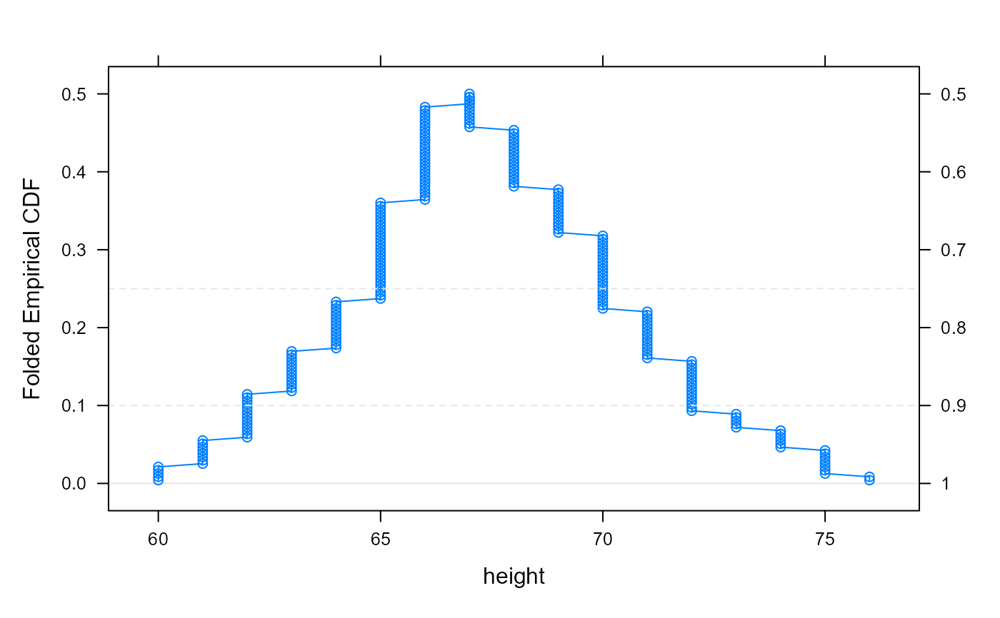
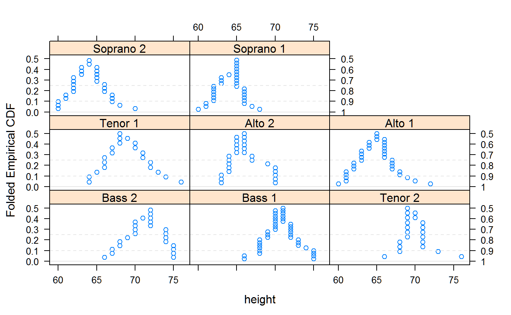
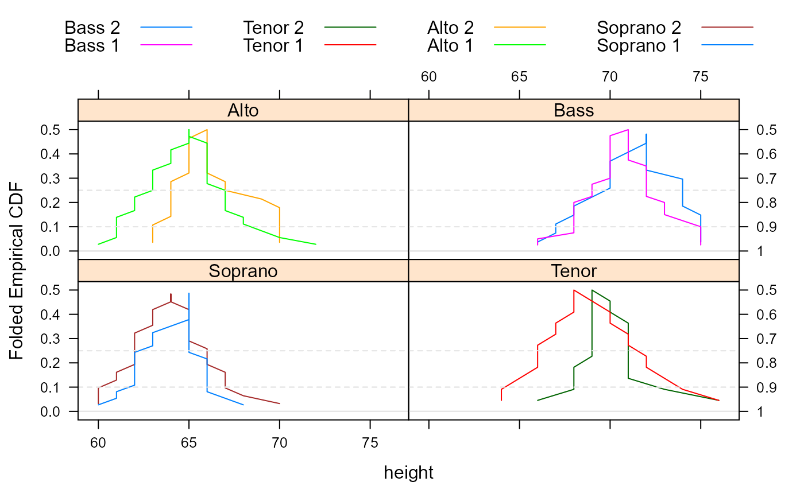

A mountain plot is similar to an empirical CDF, but _decreases_ from .5 down to 1, using a separate scale on the right axis.
mountainplot(x, data, ...)
mountainplotyscale.components(...)
# S3 method for formula
mountainplot(
x,
data = NULL,
prepanel = "prepanel.mountainplot",
panel = "panel.mountainplot",
ylab = gettext("Folded Empirical CDF"),
yscale.components = mountainplotyscale.components,
scales = list(y = list(alternating = 3)),
...
)
# S3 method for numeric
mountainplot(x, data = NULL, xlab = deparse(substitute(x)), ...)Variable in the data.frame 'data'.
A data frame
Other arguments
The prepanel function. Default "prepanel.mountainplot".
The panel function. Default "panel.mountainplot".
Vertical axis label.
Function for drawing left and right side axes.
The "scales" argument used by lattice functions.
Horizontal axis label.
A lattice object
Note that `mountainplotyscale.components` is not really intended to be called by the user, but is used by lattice to configure the right-axis ticks and labels.
K. L. Monti. (1995). Folded empirical distribution function curves-mountain plots. The American Statistician, 49, 342--345. http://www.jstor.org/stable/2684570
Xue, J. H., & Titterington, D. M. (2011). The p-folded cumulative distribution function and the mean absolute deviation from the p-quantile. Statistics & Probability Letters, 81(8), 1179-1182.
data(singer, package = "lattice")
singer <- within(singer, {
section <- voice.part
section <- gsub(" 1", "", section)
section <- gsub(" 2", "", section)
section <- factor(section)
})
mountainplot(~height, data = singer, type='b')

mountainplot(~height|voice.part, data = singer, type='p')

mountainplot(~height|section, data = singer, groups=voice.part, type='l',
auto.key=list(columns=4), as.table=TRUE)
